Innovación, Transformación Digital e Inteligencia Artificial
Un espacio donde estudiantes, empresas y expertos comparten conocimiento sobre el desarrollo tecnológico del futuro.
Ver Conferencias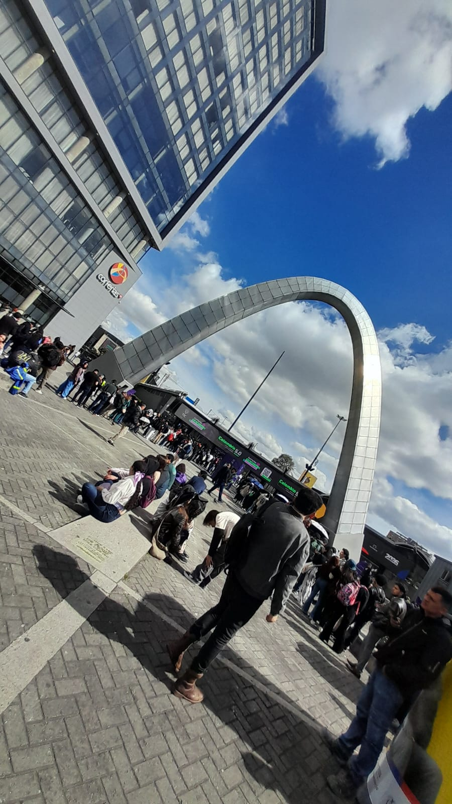
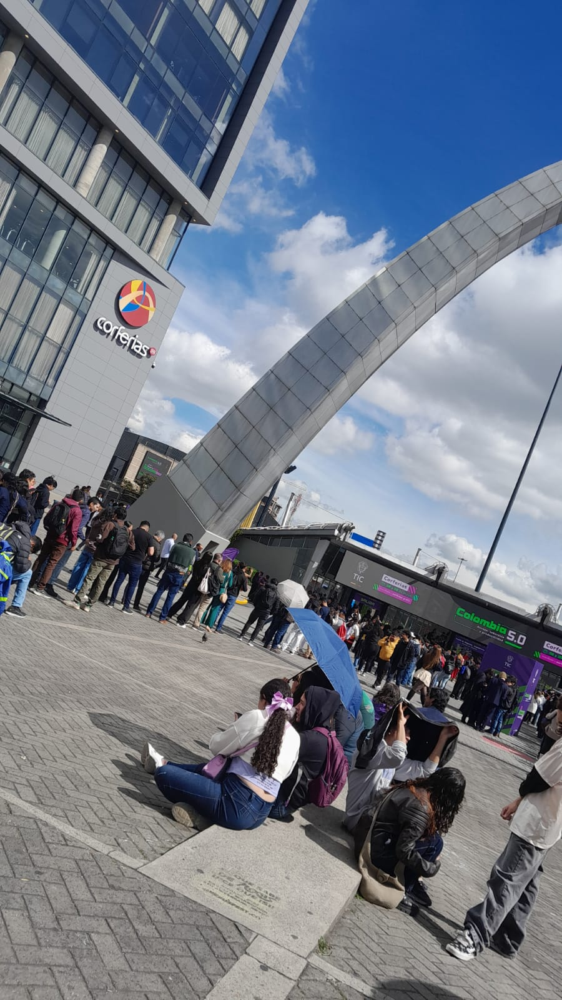
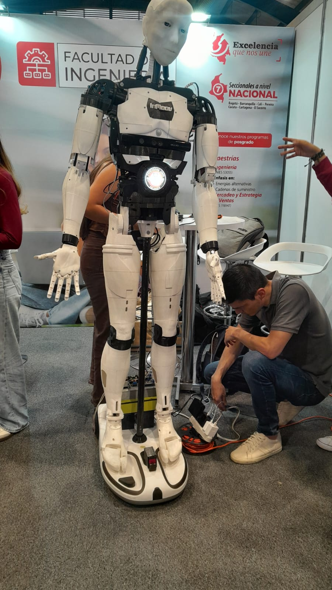
La conferencia exploró la diferencia entre una interfaz atractiva y una interfaz funcional. Andrés Felipe Pisso Tobar demostró cómo el diseño de UI en videojuegos debe equilibrar la estética con la usabilidad, destacando que una pantalla visualmente impresionante pierde su valor si el jugador no puede navegar de manera intuitiva. Se abordó el impacto directo del UX en la experiencia del jugador, incluyendo aspectos de accesibilidad, retroalimentación visual y arquitectura de información dentro del entorno de juego.
Esta conferencia presentó cómo la inteligencia artificial está redefiniendo la forma en que operan las empresas en todos los sectores. Se expusieron casos de uso reales de automatización de procesos, análisis predictivo y toma de decisiones basada en datos. Los ponentes explicaron que la transformación digital no es solo adoptar nuevas tecnologías, sino cambiar la cultura organizacional para aprovechar el potencial del machine learning, el análisis de grandes volúmenes de datos y la innovación continua como ventaja competitiva.
La ética en la tecnología empresarial es fundamental para garantizar un uso responsable de la inteligencia artificial y el manejo de datos. Los desarrolladores tienen la responsabilidad de construir soluciones seguras, transparentes e inclusivas que beneficien a toda la sociedad. Colombia 5.0 nos recuerda que la innovación tecnológica debe ir siempre acompañada de principios éticos sólidos.
| Inglés | Español | Definición |
|---|---|---|
| User Interface | Interfaz de Usuario | Punto de interacción entre el usuario y el sistema digital. |
| User Experience | Experiencia de Usuario | Percepción y respuesta del usuario al usar un producto. |
| Accessibility | Accesibilidad | Diseño que permite el uso por personas con diversas capacidades. |
| Artificial Intelligence | Inteligencia Artificial | Simulación de procesos de inteligencia humana por sistemas informáticos. |
| Machine Learning | Aprendizaje Automático | Rama de la IA que permite a los sistemas aprender de los datos. |
| Cloud Computing | Computación en la Nube | Entrega de servicios de computación a través de Internet. |
| Cybersecurity | Ciberseguridad | Protección de sistemas, redes y programas contra ataques digitales. |
| Database | Base de Datos | Colección organizada de información almacenada y accesible electrónicamente. |
| Software | Software | Conjunto de instrucciones y programas que operan en una computadora. |
| Hardware | Hardware | Componentes físicos de un sistema informático. |
| Network | Red | Conjunto de dispositivos conectados que comparten recursos e información. |
| Server | Servidor | Computadora que provee servicios o recursos a otros dispositivos. |
| Client | Cliente | Dispositivo o programa que solicita servicios a un servidor. |
| Algorithm | Algoritmo | Conjunto de instrucciones para resolver un problema paso a paso. |
| Automation | Automatización | Ejecución automática de tareas con mínima intervención humana. |
| Big Data | Grandes Datos | Conjuntos de datos masivos que requieren herramientas especializadas. |
| API | Interfaz de Programación | Conjunto de reglas que permiten la comunicación entre sistemas de software. |
| Frontend | Frontend | Capa visible de una aplicación con la que interactúa el usuario. |
| Backend | Backend | Lógica interna y procesamiento de datos de una aplicación. |
| Framework | Framework | Estructura predefinida para facilitar el desarrollo de software. |
| HTML | HTML | Lenguaje de marcado estándar para crear páginas web. |
| CSS | CSS | Lenguaje de estilos para definir la presentación visual de páginas web. |
| JavaScript | JavaScript | Lenguaje de programación que permite dinamismo en páginas web. |
| Responsive Design | Diseño Responsivo | Diseño web que se adapta a diferentes tamaños de pantalla. |
| Gaming | Videojuegos | Juegos digitales interactivos en plataformas electrónicas. |
| UX Design | Diseño UX | Proceso de diseño centrado en la experiencia del usuario. |
| UI Design | Diseño UI | Diseño visual de interfaces digitales interactivas. |
| Innovation | Innovación | Introducción de nuevas ideas, métodos o productos al mercado. |
| Data Analytics | Análisis de Datos | Interpretación de datos para obtener información útil y tomar decisiones. |
| Digital Transformation | Transformación Digital | Adopción de tecnología digital para transformar procesos y cultura empresarial. |
Moda, Tecnología e Innovación Textil en Colombia
Createx (Salón de la Industria Textil para la Confección) es una de las ferias más importantes de Colombia para el sector de textiles, confección, moda, maquinaria, tecnología e innovación. Se realiza en Corferias y reúne empresas, diseñadores, fabricantes, emprendedores, compradores y estudiantes.
El objetivo principal es conectar toda la cadena de producción de una prenda: desde la materia prima hasta el producto terminado, promoviendo la innovación, la sostenibilidad y la transformación tecnológica del sector.
Telas, fibras, materiales y nuevos acabados
Corte, costura y producción de prendas
Máquinas industriales y equipos automatizados
Conferencias sobre tendencias y moda sostenible
Presentaciones de moda y demostraciones en vivo
El punto culminante de Createx 2026 fue la pasarela "Matria", una experiencia única que fusionó moda sostenible con expresión artística. En medio de los desfiles de prendas elaboradas con materiales ecoamigables, se presentó una obra de teatro que narró la historia de las mujeres en la industria textil colombiana, conectando el pasado artesanal con el futuro tecnológico de la moda.
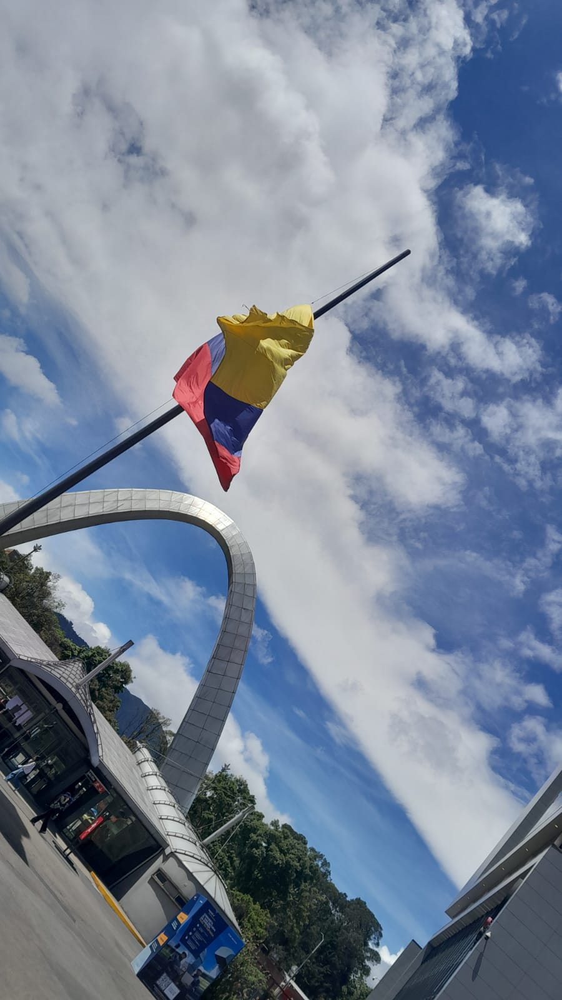
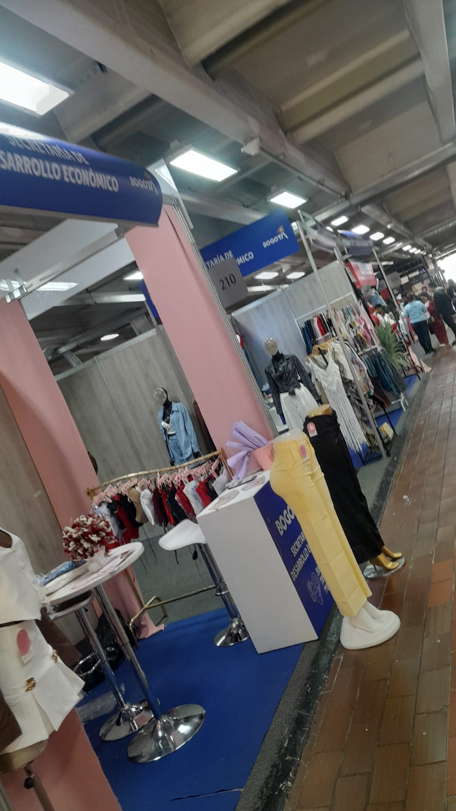
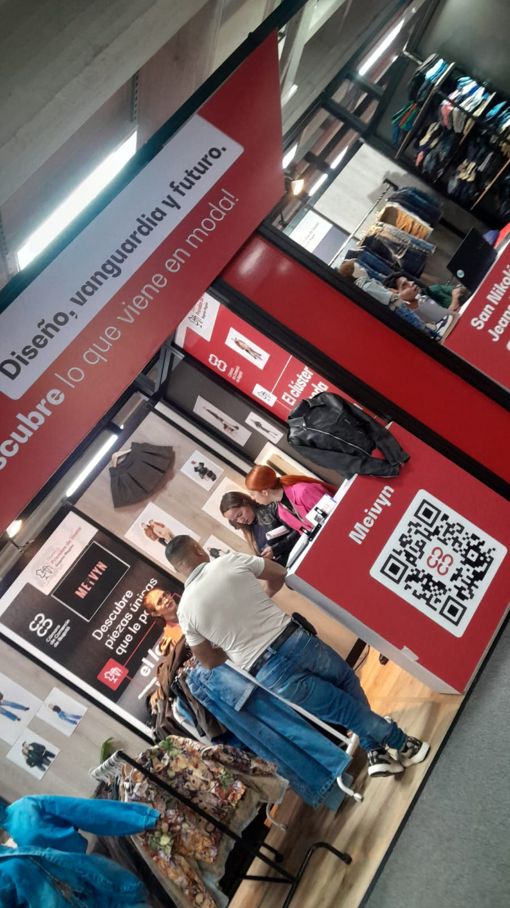
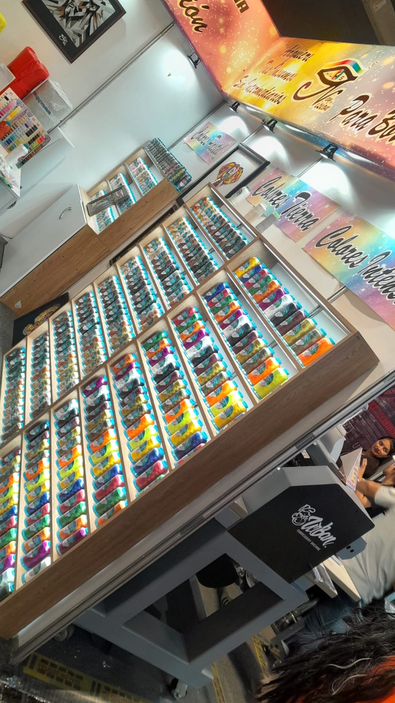
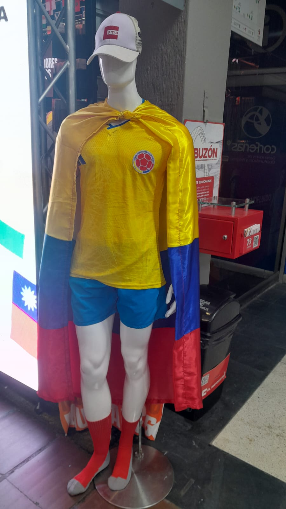
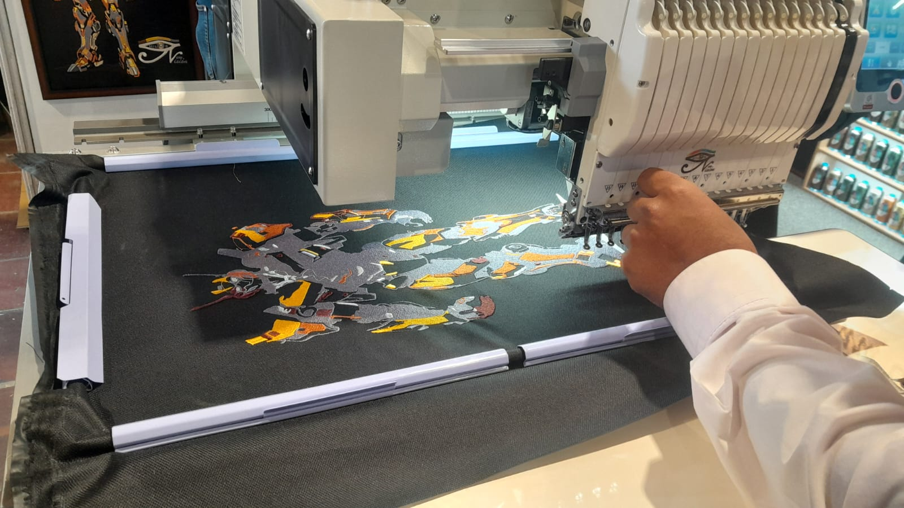
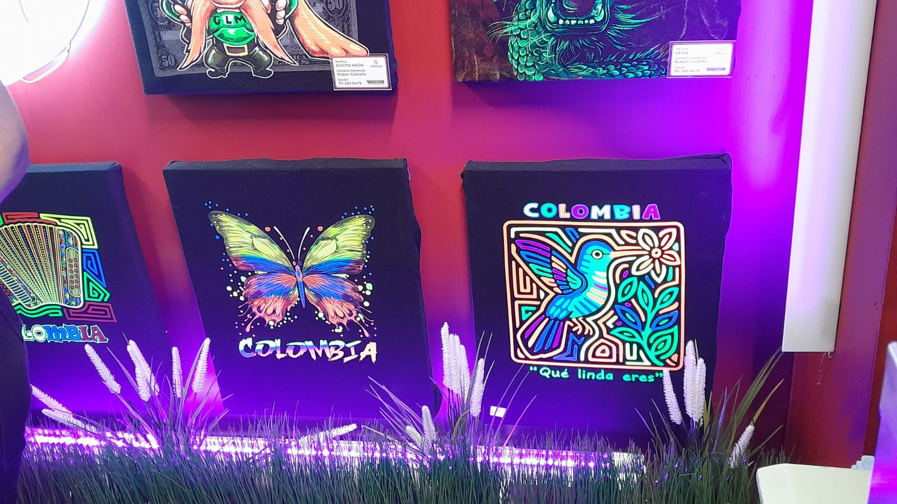
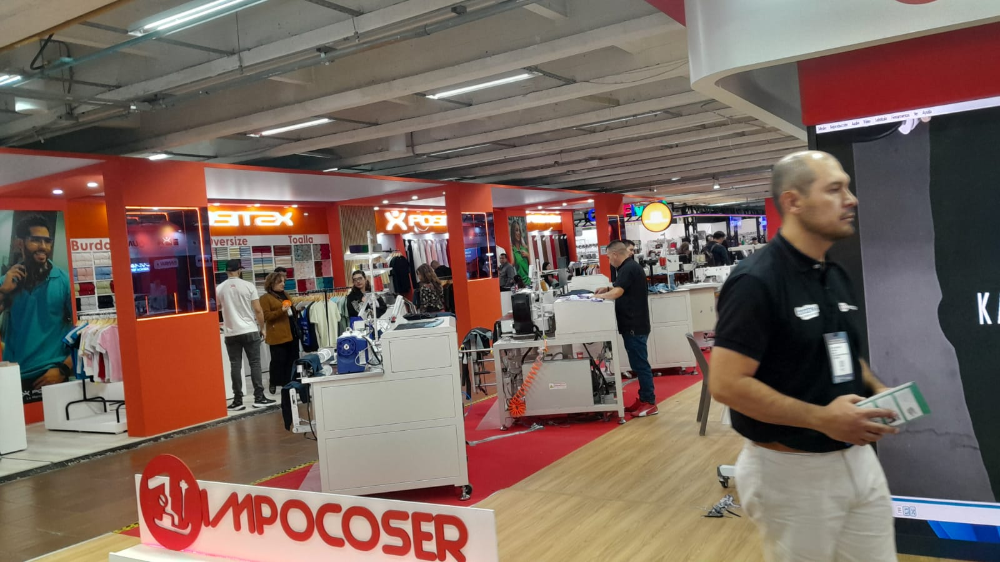
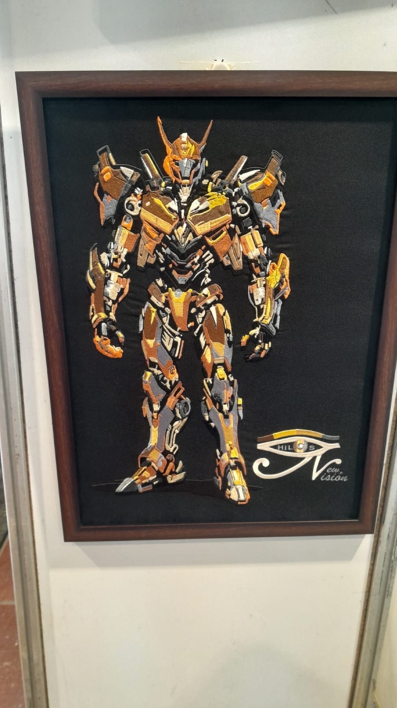
Createx no es solo una feria de ropa; es un espacio donde se conecta toda la industria textil y de confección. Allí se presentan nuevas tecnologías, tendencias sostenibles y oportunidades de negocio que ayudan al crecimiento del sector moda en Colombia y Latinoamérica. Con más de 51 empresas bogotanas participantes y expectativas de negocio superiores a USD 1 millón, Createx 2026 consolidó su posición como el evento más importante del sector textil en Colombia.